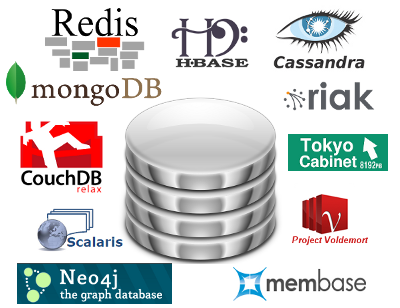
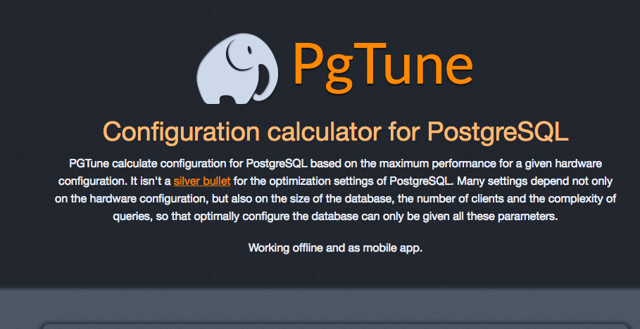

Alexey Vasiliev
- 8+ years experience
- Linux and Databases administrator
- Web and Mobile developer (Ruby, Java, JavaScript, Objective-C, C/C++)
- Open-Source developer
- PgTune, SQL Joins Visualizer
- RWbox, ElixirV8, Go-kinesis
- WebP-ffi, Zopfli-ffi
- MongodbLogger for Rails
- Piro - Chrome extension for PivotalTracker
- SMTRails and SHTRails (shared templates for rails)
My books
SQL and NoSQL
Relational database management system
Edgar Codd is the author of the 'relational' concept
- each element of the table is a data element;
- all cells in the column homogeneous: all elements in the column are the same type (numeric, character, etc.);
- each column has a unique name;
- identical rows in the table are not available;
- the order of the rows and columns can be arbitrary.

NoSQL
For the first time the term "NoSQL" was used in the late 90's. The real meaning of the form used now got only in the middle 2009. Originally, it was a title of the open-source database created by Carlo Strozzi, which stores all data as ASCII files and used shell scripts instead of SQL to access data.
The term "NoSQL" has absolutely natural origin and has no universally accepted definition or scientific institution behind. This title is rather characterized by the vector of development of IT away from relational databases
Wide Column Store / Column Families
NoSQL
Advantages
- It is possible to compress data significantly, because in a single column of the table, the data is usually in the same type;
- Allows on a cheap and low-powered hardware to boost the speed for the query performance in the 5, 10 and sometimes even 100 times, thus, due to compression, the data on the drive will take 5-10 times less space than in the case of the traditional RDBMS
Disadvantages
- In general there are no transactions;
- Have a number of limitations for the developer who is used to the developed traditional RDBMS
Key Value / Tuple Store
NoSQL
Advantages
- RDBMS are too slow, have heavy layer of SQL cursors;
- Solutions of RDBMS to store small amounts of data too much cost;
- There are no need for SQL queries, indexes, triggers, stored procedures, temporary tables, forms, views, etc;
- Key/value database is easily scalable and high-performance due to its lightness.
Disadvantages
- Limitations of relational databases ensure data integrity at the lowest level. In stores key/value no such restriction. Data integrity controled by applications. In this case data integrity may be compromised due to errors in the application code;
- In an RDBMS if the model is well designed, the database will contain a logical structure that fully reflects the structure of the stored data. For a key/value storage it is harder to achieve.
Document Store
NoSQL
Advantages
- Sufficiently flexible language for querying;
- Easy horizontally scalable.
Disadvantages
- Atomicity in most cases is conditional.
Graph Databases
NoSQL
Advantages
- Often faster for associative data sets;
- Can scale more naturally to large data sets as they do not typically require expensive join operations.
Disadvantages
- RDBMS can be used in more general cases. Graph databases are suitable for graph-like data.
Object Databases
NoSQL
Advantages
- The object model is the best display of the real world, rather than relational tuples. This is especially true for complex and multi-faceted objects;
- Organize your data with hierarchical characteristics;
- Separate query language is not required for accessing the data, because access is directly to objects. Nevertheless, the possibility exists to use the queries.
Disadvantages
- In the RDBMS schema change as a result of the creation, modification or deletion of tables usually do not depend on the application;
- Object database usually tied to a particular language with a separate API and data are available only through the API. RDBMS in this regard is a great opportunity, thanks to the common query language.
... and many others
NoSQL
Now there are about 150 kinds of NoSQL databases
What is PostgreSQL?
PostgreSQL
PostgreSQL ("Postgres") - is an object-relational database management system (ORDBMS) with an emphasis on extensibility and standards-compliance
PostgreSQL is based on the SQL language and supports many of the features of the standard SQL:2011
PostgreSQL evolved from the Ingres project at the University of California, Berkeley. In 1982 the leader of the Ingres team, Michael Stonebraker, left Berkeley to make a proprietary version of Ingres. He returned to Berkeley in 1985 and started a post-Ingres project.
PostgreSQL strengths
- database support of virtually unlimited size;
- powerful and reliable transaction and replication mechanisms;
- extensible embedded programming languages: in the standard package are supported by PL/pgSQL, PL/Perl, PL/Python and PL/Tcl; additionally, you can use PL/Java, PL/PHP, PL/Py, PL/R, PL/Ruby, PL/Scheme, PL/sh and PL/V8, and has support for loading C-compatible modules;
- inheritance;
- easy extensibility.
PostgreSQL limits
| Limit | Value |
|---|---|
| Maximum Database Size | Unlimited |
| Maximum Table Size | 32 TB |
| Maximum Row Size | 1.6 TB |
| Maximum Field Size | 1 GB |
| Maximum Rows per Table | Unlimited |
| Maximum Columns per Table | 250-1600 depending on column types |
| Maximum Indexes per Table | Unlimited |
PostgreSQL features
SQL:2011 standard
mysql> SELECT 124124/0;
+----------+
| 124124/0 |
+----------+
| NULL |
+----------+
mysql> (SELECT * FROM moo LIMIT 1) LIMIT 2;
+------+
| a |
+------+
| 1 |
| 2 |
+------+
mysql> SELECT 'aaa' = 'aaa ';
+----------------+
| 'aaa' = 'aaa ' |
+----------------+
| 1 |
+----------------+
SQL:2011 standard
mysql> CREATE TABLE enums(a ENUM('c', 'a', 'b'), b INT, KEY(a));
mysql> INSERT INTO enums VALUES('a', 1), ('b', 1), ('c', 1);
mysql> SELECT MIN(a), MAX(a) FROM enums;
+--------+--------+
| MIN(a) | MAX(a) |
+--------+--------+
| c | b |
+--------+--------+
mysql> SELECT MIN(a), MAX(a) FROM enums WHERE b = 1;
+--------+--------+
| MIN(a) | MAX(a) |
+--------+--------+
| a | c |
+--------+--------+
Flexible Datatypes
Flexible Datatypes
Build in:
- integer, (small|big)int, decimal, numeric, real
- money, serial, (small|big)serial
- character(n), char(n), text, bytea
- timestamp (with/without time zone), date, time, interval
- boolean, enum
- point, line, box, path, polygon, circle
- cidr, inet, macaddr
- tsvector, uuid
- xml, json, jsonb, arrays
- (int4|int8|num|ts|tstz|date)range
With extensions:
- box2d, box3d, geometry, geometry_dump, geography
- spoint, strans, scircle, sline, sellipse, spoly, spath, sbox
- image, hstore, prefix_range
- semver, mpz, mpq
- many others...
Arrays
Flexible Datatypes
select array_agg(id) from endpoints group by application_id;
select (array['hi', 'there', 'everyone', 'at', 'smartme'])[random()*2 + 1];
select name, tags from posts where tags @> array['it', 'sql'];
select unnest(tags) as tag from posts where title = 'About PostgreSQL';
Ranges (9.2+)
Flexible Datatypes
SELECT int4range(10, 20) @> 3;
SELECT daterange('["Jan 1 2013", "Jan 15 2013")') @> 'Jan 10 2013'::date;
$ ALTER TABLE reservation ADD EXCLUDE USING gist (during WITH &&);
$ INSERT INTO reservation VALUES (1108, '[2010-01-01 11:30, 2010-01-01 13:00)');
INSERT 0 1
$ INSERT INTO reservation VALUES (1108, '[2010-01-01 14:45, 2010-01-01 15:45)');
ERROR: conflicting key value violates exclusion constraint "reservation_during_excl"
DETAIL: Key (during)=([ 2010-01-01 14:45:00, 2010-01-01 15:45:00 )) conflicts
with existing key (during)=([ 2010-01-01 14:30:00, 2010-01-01 15:30:00 )).
XML, JSON and JSONB
Flexible Datatypes
$ SELECT xpath('/my:a/text()', 'test ', ARRAY[ARRAY['my', 'http://example.com']]);
xpath
--------
{test}
$ SELECT * from json_demo;
id | username | email | posts_count
----+----------+-------------------+-------------
1 | john | john@gmail.com | 10
2 | mickael | mickael@gmail.com | 50
$ SELECT row_to_json(json_demo) FROM json_demo;
row_to_json
----------------------------------------------------------------------------
{"id":1,"username":"john","email":"john@gmail.com","posts_count":10}
{"id":2,"username":"mickael","email":"mickael@gmail.com","posts_count":50}
JSON/JSONB and PLV8 for "schemaless" sql
Flexible Datatypes
CREATE OR REPLACE FUNCTION get_numeric(json_raw json, key text)
RETURNS numeric AS $$
var o = JSON.parse(json_raw);
return o[key];
$$ LANGUAGE plv8 IMMUTABLE STRICT;
SELECT * FROM members WHERE get_numeric(profile, 'age') = 36;
Time: 9340.142 ms
CREATE INDEX member_age ON members (get_numeric(profile, 'age'));
SELECT * FROM members WHERE get_numeric(profile, 'age') = 36;
Time: 57.429 ms
JSON functions (9.3+)
Flexible Datatypes
- array_to_json (present in 9.2)
- row_to_json (present in 9.2)
- to_json
- json_array_length
- json_each
- json_each_text
- json_extract_path
- json_extract_path_text
- json_object_keys
- json_populate_record
- json_populate_recordset
- json_array_elements
JSONB (9.4+)
Flexible Datatypes
SELECT '[1, 2, 3]'::jsonb @> '[1, 3]'::jsonb;
?column?
----------
t
(1 row)
SELECT '{"product": "PostgreSQL", "version": 9.4, "jsonb":true}'::jsonb @> '{"version":9.4}'::jsonb;
?column?
----------
t
(1 row)
WITH examples
WITH
WITH a AS ( SELECT 'a' as a ) SELECT * FROM a;
WITH
prepared_data AS ( ... )
SELECT data, count(data),
min(data), max(data)
FROM prepared_data
GROUP BY data;
WITH examples
WITH
$ WITH RECURSIVE t(n) AS (
VALUES (1)
UNION ALL
SELECT n+1 FROM t WHERE n < 100
)
SELECT sum(n) FROM t;
sum
------
5050
(1 row)
LISTEN / NOTIFY example
LISTEN / NOTIFY
$ LISTEN delay_worker;
LISTEN
$ NOTIFY delay_worker, '44924';
NOTIFY
Asynchronous notification "delay_worker"
with payload "44924" received from server process with PID 29118.
$ SELECT pg_notify('delay_worker', '44924');
pg_notify
-----------
(1 row)
Asynchronous notification "delay_worker"
with payload "44924" received from server process with PID 29118.
What is this?
LISTEN / NOTIFY
- LISTEN on a channel
- NOTIFY messages are delivered asynchronously w/payload
- useful to fan out messages to other clients
Great for
- broadcasting events to other clients
- work distribution
- cache busting
Window functions example
Window functions
$ SELECT depname, empno, salary, avg(salary)
OVER (PARTITION BY depname) FROM empsalary;
depname | empno | salary | avg
-----------+-------+--------+-----------------------
develop | 11 | 5200 | 5020.0000000000000000
develop | 7 | 4200 | 5020.0000000000000000
develop | 9 | 4500 | 5020.0000000000000000
develop | 8 | 6000 | 5020.0000000000000000
develop | 10 | 5200 | 5020.0000000000000000
personnel | 5 | 3500 | 3700.0000000000000000
personnel | 2 | 3900 | 3700.0000000000000000
sales | 3 | 4800 | 4866.6666666666666667
sales | 1 | 5000 | 4866.6666666666666667
sales | 4 | 4800 | 4866.6666666666666667
(10 rows)
Window functions example
Window functions
$ SELECT salary, sum(salary) OVER () FROM empsalary;
salary | sum
--------+-------
5200 | 47100
5000 | 47100
3500 | 47100
4800 | 47100
3900 | 47100
4200 | 47100
4500 | 47100
4800 | 47100
6000 | 47100
5200 | 47100
(10 rows)
Window functions example
Window functions
$ SELECT salary, sum(salary) OVER (ORDER BY salary) FROM empsalary;
salary | sum
--------+-------
3500 | 3500
3900 | 7400
4200 | 11600
4500 | 16100
4800 | 25700
4800 | 25700
5000 | 30700
5200 | 41100
5200 | 41100
6000 | 47100
(10 rows)
PostgreSQL Internals
Backend Flowchart
PostgreSQL Internals
{kind=link}
Optimizer
PostgreSQL Internals
Optimizer
- Scan Methods
- Join Methods
- Join Order
Scan Methods
- Sequential Scan
- Index Scan
- Bitmap Index Scan
Sequential Scan
PostgreSQL Internals
Btree Index Scan
PostgreSQL Internals
Bitmap Index Scan
PostgreSQL Internals
Join Methods
PostgreSQL Internals
-
Nested Loop
- With Inner Sequential Scan
- With Inner Index Scan
- Hash Join
- Merge Join
Nested Loop Join with Inner Sequential Scan
PostgreSQL Internals
Used For Small Tables
Nested Loop Join with Inner Index Scan
PostgreSQL Internals
Index Must Already Exist
Hash Join
PostgreSQL Internals
Merge Join
PostgreSQL Internals
Ideal for Large Tables, An Index Can Be Used to Eliminate the Sort
Learn SQL Joins
PostgreSQL Internals
Lock Modes
PostgreSQL Internals
| Mode | Used |
|---|---|
| Access Share Lock | SELECT |
| Row Share Lock | SELECT FOR UPDATE |
| Row Exclusive Lock | INSERT, UPDATE, DELETE |
| Share Lock | CREATE INDEX |
| Share Row Exclusive Lock | EXCLUSIVE MODE but allows ROW SHARE LOCK |
| Exclusive Lock | Blocks ROW SHARE LOCK and SELECT...FOR UPDATE |
| Access Exclusive Lock | ALTER TABLE, DROP TABLE, VACUUM |
| Advisory Locks | Application-defined |
PostgreSQL settings
At beginning
PostgreSQL settings
- Do not use the default settings
- Use the latest version of a PostgreSQL server
- Do not rely on performance tests
- EXPLAIN ANALYZE and indexes, indexes, indexes

Performance since PostgreSQL 7.4
Performance since PostgreSQL 7.4
Performance since PostgreSQL 7.4
shared_buffers and work_mem
PostgreSQL settings
shared_buffers
Sets the amount of memory the database server uses for shared memory buffers. Larger settings for shared_buffers usually require a corresponding increase in checkpoint_segments, in order to spread out the process of writing large quantities of new or changed data over a longer period of time.
work_mem
Specifies the amount of memory to be used by internal sort operations and hash tables before writing to temporary disk files. Note that for a complex query, several sort or hash operations might be running in parallel; each operation will be allowed to use as much memory as this value specifies before it starts to write data into temporary files.
shared_buffers (< 9.3)
PostgreSQL settings
#!/bin/bash
# simple shmsetup script
page_size=`getconf PAGE_SIZE`
phys_pages=`getconf _PHYS_PAGES`
shmall=`expr $phys_pages / 2`
shmmax=`expr $shmall \* $page_size`
echo kernel.shmmax = $shmmax
echo kernel.shmall = $shmall
Example for 2GB:
kernel.shmmax = 1055092736
kernel.shmall = 257591
maintenance_work_mem and temp_buffers
PostgreSQL settings
maintenance_work_mem
Specifies the maximum amount of memory to be used by maintenance operations, such as VACUUM, CREATE INDEX, and ALTER TABLE ADD FOREIGN KEY.
temp_buffers
Sets the maximum number of temporary buffers used by each database session. These are session-local buffers used only for access to temporary tables.
checkpoint_segments and checkpoint_completion_target
PostgreSQL settings
checkpoint_segments
Maximum number of log file segments between automatic WAL checkpoints (each segment is normally 16 megabytes).
checkpoint_completion_target
Specifies the target of checkpoint completion, as a fraction of total time between checkpoints.
synchronous_commit and fsync
PostgreSQL settings
synchronous_commit
Specifies whether transaction commit will wait for WAL records to be written to disk before the command returns a "success" indication to the client. Valid values are on, remote_write, local, and off.
fsync
If this parameter is on, the PostgreSQL server will try to make sure that updates are physically written to disk, by issuing fsync() system calls or various equivalent methods.
default_statistics_target and effective_cache_size
PostgreSQL settings
default_statistics_target
Sets the default statistics target for table columns without a column-specific target set via ALTER TABLE SET STATISTICS. Larger values increase the time needed to do ANALYZE, but might improve the quality of the planner's estimates.
effective_cache_size
Sets the planner's assumption about the effective size of the disk cache that is available to a single query. This is factored into estimates of the cost of using an index; a higher value makes it more likely index scans will be used, a lower value makes it more likely sequential scans will be used.
PgTune
PostgreSQL settings
pgtune.leopard.in.ua
Filesystem and swap
PostgreSQL settings
- barrier=0, noatime
- xfs or ext4
- vm.swappiness = 0
- On large amounts of memory swap still almost useless
- Transfer of the transaction log on a separate disk
Huge Pages (9.4+, linux only)
PostgreSQL settings
- kernel with CONFIG_HUGETLBFS=y and CONFIG_HUGETLB_PAGE=y
- huge_pages = try|on|off (9.4+)
- echo never > /sys/kernel/mm/transparent_hugepage/defrag
- echo never > /sys/kernel/mm/transparent_hugepage/enabled
$ head -1 /path/to/data/directory/postmaster.pid
4170
$ grep ^VmPeak /proc/4170/status
VmPeak: 6490428 kB
Indexes
Functional Indexes
Functional and Partial Indexes
Index on expression
CREATE INDEX foo_name_first_idx
ON foo ((lower(substr(foo_name, 1, 1))));
for selects
SELECT * FROM foo
WHERE lower(substr(foo_name, 1, 1)) = 's';
Partial Indexes
Functional and Partial Indexes
Index refers to the predicate WHERE
CREATE INDEX access_log_client_ip_ix ON access_log (client_ip)
WHERE (client_ip > inet '192.168.100.0' AND
client_ip < inet '192.168.100.255');
for selects
SELECT * FROM access_log
WHERE client_ip = '192.168.100.45';
Create Index Concurrently
Indexes
Instead
CREATE INDEX sales_quantity_index ON sales_table (quantity);
this better for huge table
CREATE INDEX CONCURRENTLY sales_quantity_index ON sales_table (quantity);
but be careful
Indexes:
"idx" btree (col) INVALID
REINDEX
Indexes
REINDEX rebuilds an index using the data stored in the index's table, replacing the old copy of the index
- An index has become corrupted, and no longer contains valid data. Although in theory this should never happen, in practice indexes can become corrupted due to software bugs or hardware failures
- An index has become "bloated", that it is contains many empty or nearly-empty pages. This can occur with B-tree indexes in PostgreSQL under certain uncommon access patterns
- An index build with the CONCURRENTLY option failed, leaving an "invalid" index
REINDEX is similar to a drop and recreate of the index in that the index contents are rebuilt from scratch
Flexible Indexes
| MySQL | PostgreSQL | MS SQL | Oracle | |
|---|---|---|---|---|
| B-Tree index | Yes | Yes | Yes | Yes |
| Spatial indexes | R-Tree | Rtree_GiST | Grid-based spatial index | R-Tree, Quadtree |
| Hash index | Only in memory tables | Yes | No | No |
| Bitmap index | No | Yes | No | Yes |
| Reverse index | No | No | No | Yes |
| Inverted index | Yes | Yes | Yes | Yes |
| Partial index | No | Yes | Yes | No |
| Function based index | No | Yes | Yes | Yes |
Table Inheritance
Vertical and Horizontal Scaling
Partitioning
Buying a bigger box is quick(ish). Redesigning software is not.
37 Signals Basecamp upgraded to 128 GB DB server: don’t need to pay the complexity tax yet
How to use Partitioning
Partitioning
CREATE TABLE my_logs(
id SERIAL PRIMARY KEY,
logdate TIMESTAMP NOT NULL,
data JSON
);
CREATE TABLE my_logs2015m01 (
CHECK ( logdate >= DATE '2015−01−01' AND logdate < DATE '2015−02−01' )
) INHERITS (my_logs);
CREATE INDEX my_logs2015m01_logdate ON my_logs2015m01 (logdate);
Management Partition
Partitioning
Simple cleanup
DROP TABLE my_logs2015m01;
or remove partition from partitioning
ALTER TABLE my_logs2015m01 NO INHERIT my_logs;
Management Partition
Partitioning
CREATE OR REPLACE FUNCTION my_logs_insert_trigger()
RETURNS TRIGGER AS $$
BEGIN
IF ( NEW.logdate >= DATE '2015-01-01' AND
NEW.logdate < DATE '2015-02-01' ) THEN
INSERT INTO my_logs2015m01 VALUES (NEW.*);
ELSIF ( NEW.logdate >= DATE '2015-02-01' AND
NEW.logdate < DATE '2015-03-01' ) THEN
INSERT INTO my_logs2015m02 VALUES (NEW.*);
ELSE
RAISE EXCEPTION 'Date out of range. Fix the my_logs_insert_trigger() function!';
END IF;
RETURN NULL;
END;
$$
LANGUAGE plpgsql;
Management Partition
Partitioning
Activate trigger:
CREATE TRIGGER insert_my_logs_trigger
BEFORE INSERT ON my_logs
FOR EACH ROW EXECUTE PROCEDURE my_logs_insert_trigger();
test it:
INSERT INTO my_logs (user_id, logdate, data, some_state) VALUES(1, '2015-01-30', 'some data', 1);
INSERT INTO my_logs (user_id, logdate, data, some_state) VALUES(2, '2015-02-10', 'some data2', 1);
Management Partition
Partitioning
Results:
$ SELECT * FROM ONLY my_logs;
id | user_id | logdate | data | some_state
----+---------+---------+------+------------
(0 rows)
$ SELECT * FROM my_logs;
id | user_id | logdate | data | some_state
----+---------+---------------------+------------------+------------
1 | 1 | 2015-10-30 00:00:00 | some data | 1
2 | 2 | 2015-02-10 00:00:00 | some data2 | 1
PG Partition Manager
Partitioning
CREATE schema test;
CREATE TABLE test.part_test (col1 serial, col2 text, col3 timestamptz NOT NULL DEFAULT now());
SELECT partman.create_parent('test.part_test', 'col3', 'time-static', 'daily');
This will turn your table into a parent table and premake 4 future partitions and also make 4 past partitions. To make new partitions for time-based partitioning, use the run_maintenance() function.
Smart Query Optimization
Partitioning
$ SET constraint_exclusion = partition;
$ EXPLAIN SELECT ∗ FROM my_logs WHERE logdate > '2012−08−01';
QUERY PLAN
−−−−−−−−−−−−−−−−−−−−−−−−−−−−−−−−−−−−−−−−−−−−−−−−−−−−−−−−−−−−−−−−−−−−−−
Result ( cost =6.81..41.87 rows=660 width=52)
−> Append ( cost =6.81..41.87 rows=660 width=52)
−> Bitmap Heap Scan on my_logs ( cost =6.81..20.93 rows=330 width=52)
Recheck Cond: ( logdate > '2012−08−01 00:00:00' : : timestamp without time zone)
−> Bitmap Index Scan on my_logs_logdate ( cost =0.00..6.73 rows=330 width=0)
Index Cond: (logdate > '2012−08−01 00:00:00' : : timestamp without time zone)
−> Bitmap Heap Scan on my_logs2012m08 my_logs ( cost =6.81..20.93 rows=330 width=52)
Recheck Cond: ( logdate > '2012−08−01 00:00:00' : : timestamp without time zone)
−> Bitmap Index Scan on my_logs2012m08_logdate ( cost =0.00..6.73 rows=330 width=0)
Index Cond: (logdate > '2010−08−01 00:00:00' : : timestamp without time zone)
(10 rows)
Caveats
Partitioning
- There is no automatic way to verify that all of the CHECK constraints are mutually exclusive
- The schemes shown here assume that the partition key column(s) of a row never change, or at least do not change enough to require it to move to another partition
- If you are using manual VACUUM or ANALYZE commands, don't forget that you need to run them on each partition individually
- All constraints on all partitions of the master table are examined during constraint exclusion, so large numbers of partitions are likely to increase query planning time considerably. Partitioning using these techniques will work well with up to perhaps a hundred partitions; don't try to use many thousands of partitions
Replication
Replication Solutions
Replication
- Streaming Replication (build in)
- Slony-I
- Pgpool-I/II
- Bucardo
- Londiste
- RubyRep
- many others...

Streaming Replication
Replication
- Advantages:
- Log-shipping instead triggers
- Multiple standbys
- Synchronous and asynchronous
- Continuous recovery
- Easy monitoring
- Disadvantages:
- You can replicate only full database
- Replication beyond timeline
- No failover and load balancing
The history of replication in PostgreSQL
Replication
- 2001: PostgreSQL 7.1: write-ahead log
- 2004: Slony
- 2005: PostgreSQL 8.0: point-in-time recovery
- 2008: PostgreSQL 8.3: pg_standby
- 2010: PostgreSQL 9.0: hot standby, streaming replication
- 2011: PostgreSQL 9.1: pg_basebackup, synchronous replication
- 2012: PostgreSQL 9.2: cascading replication
- 2013: PostgreSQL 9.3: standby can follow timeline switch
- 2014: PostgreSQL 9.4: replication slots, logical decoding
- 2015? PostgreSQL 9.5? pg_rewind?
Slony-I
Replication
- Advantages:
- Replicate between different version of databases
- Replicate part of tables in database
- Extra behaviours taking place on subscribers, for instance, populating cache management information
- Disadvantages:
- Trigger replication
- You're probably okay. Until slony breaks :)
Pgpool-I/II
Replication
- Advantages:
- Simple setup
- Have additional features (Connection Pooling, Load Balancing, Limiting Exceeding Connections, Parallel Query)
- Disadvantages:
- Synchronous replication (more nodes - bigger slowdown)
Bucardo
Replication
- Advantages:
- Master-master of Master-slave replication
- Replicate between different version of databases
- Replicate part of tables in database
- Replicate to different databases (drizzle, mongo, mysql, oracle, redis and sqlite)
- Disadvantages:
- Trigger replication
Londiste
Replication
- Advantages:
- Replicate between different version of databases
- Replicate part of tables in database
- Simple setup and monitoring
- Disadvantages:
- Trigger replication
Bi-Directional Replication (BDR)
Replication
- Advantages:
- Master-master replication
- Up to 48 nodes
- Disadvantages:
- Conflict Resolution
- Each node eventually consistent
- Right now we have only patch, official should be for 9.5
Replication comparison
| Hot Standby | BDR | Londiste | Slony | Bucardo | |
|---|---|---|---|---|---|
| Multi-Master | No | Yes | No1 | No | Yes |
| Per DB Replication | No | Yes | Yes | Yes | Yes |
| Cascading | Yes | No | Yes | Yes | Yes |
| DDL Replication | Yes | Yes | No2 | No2 | No |
| Need external daemon | No | No | Yes | Yes | Yes |
| New table added automatically | Yes | Yes | No | No | No |
| Use triggers | No | No | Yes | Yes | Yes |
| Support updates on PK columns | Yes | Yes | No | No | No |
| Selective replication | No | Yes | Yes | Yes | Yes |
| Transactions applied indidualy | Yes | Yes | No | No | No |
1 - Multi-master via handler, but only supports last update wins conflict resolution and is complicated
2 - Londiste and Slony provide facilities for executing scripts on all nodes but it's not transparent
Pgpool-II + Streaming Replication = <3
Replication
- Ease of setup and maintenance
- Adding slaves without sacrificing performance
- More slaves - more performance on reading (load balancing)
- Automatic switch to slave if master fail (failover)
Clustering
Clustering solutions
Clustering
- Pl/Proxy (SkyTools)
- Postgres-XC, Postgres-XL
- Pg_shard
- Stado (sequel to GridSQL)
- Greenplum
Pl/Proxy
Clustering
CREATE OR REPLACE FUNCTION
public.get_cluster_partitions(cluster_name text)
RETURNS SETOF text AS
$BODY$
BEGIN
IF cluster_name = 'usercluster' THEN
RETURN NEXT 'dbname=plproxytest host=node1 user=postgres';
RETURN NEXT 'dbname=plproxytest host=node2 user=postgres';
RETURN;
END IF;
RAISE EXCEPTION 'Unknown cluster';
END;
$BODY$
LANGUAGE 'plpgsql' VOLATILE
COST 100
ROWS 1000;
ALTER FUNCTION public.get_cluster_partitions(text)
OWNER TO postgres;
Postgres-XC
Clustering
- Write‐scalable PostgreSQL cluster (more than 3x scalability performance speedup with five servers, compared with pure PostgreSQL)
- Synchronous multi‐master configuration (any update to any master is visible from other masters immediately)
- Table location transparent
- Based upon PostgreSQL
- Same API to Apps as PostgreSQL
Postgres-XC
Clustering
Pg_shard
Clustering
CREATE EXTENSION pg_shard;
CREATE TABLE customer_reviews
(
customer_id TEXT NOT NULL,
review_date DATE,
review_rating INTEGER
);
SELECT master_create_distributed_table('customer_reviews', 'customer_id');
SELECT master_create_worker_shards('customer_reviews', 16, 2);
Pg_shard Limitations
Clustering
Architectural decisions:
- Transactional semantics for queries that span across multiple shards. For example, you're a financial institution and you sharded your data based on customer_id. You'd now like to withdraw money from one customer's account and debit it to another one's account, in a single transaction block
- Unique constraints on columns other than the partition key, or foreign key constraints
- Distributed "JOIN"s also aren't supported
Unsupported features:
- Table alterations are not supported: customers who do need table alterations accomplish them by using a script that propagates such changes to all worker nodes
- "DROP TABLE" does not have any special semantics when used on a distributed table. An upcoming release will add a shard cleanup command to aid in removing shard objects from worker nodes
- Queries such as "INSERT INTO foo SELECT bar, baz FROM qux" are not supported
Radical Additional Options
Clustering
"NoSQL" database
- CouchDB, MongoDB, HBase, Cassandra, Redis
- Document store
- Map/Reduce querying
Extensions
Foreign Data Wrappers (FDWs)

Wrappers
Foreign Data Wrappers (FDWs)
- oracle_fdw
- mysql_fdw
- odbc_fdw
- jdbc_fdw
- couchdb_fdw
- mongo_fdw
- redis_fdw
- file_fdw, file_text_array_fdw, file_fixed_length_record_fdw
- twitter_fdw
- ldap_fdw
- s3_fdw
- www_fdw
- Multicorn (CSV, FS, RSS, Hive)
Wrappers support
Foreign Data Wrappers (FDWs)
- From PostgreSQL 9.1 - wrappers can only read
- From PostgreSQL 9.3 - wrappers can read and write
Contrib Extensions
- Dblink
- Cube
- Fuzzystrmatch
- Hstore
- Intarray
- Ltree
- Pg_buffercache
- Pgbench
- Uuid-ossp
- Tsearch2
- many others...
PostGIS and PgSphere
Extensions
PostGIS adds support for geographic objects to the PostgreSQL. PostGIS corresponds OpenGIS and has been certified
PgSphere provides spherical PostgreSQL data types, as well as functions and operators to work with them. Used to work with geographic (can be used instead of PostGIS) or astronomical data types

PLV8
Extensions
PLV8 is an extension that provides PostgreSQL procedural language with the V8 JavaScript engine
Why javascript?
- everywhere
- good parts
- trusted language
Fibonacci
PLV8
CREATE OR REPLACE FUNCTION
psqlfib(n int) RETURNS int AS $$
BEGIN
IF n < 2 THEN
RETURN n;
END IF;
RETURN psqlfib(n-1) + psqlfib(n-2);
END;
$$ LANGUAGE plpgsql IMMUTABLE STRICT;
select n, psqlfib(n)
from generate_series(0,30,5) as n;
n | psqlfib
----+---------
0 | 0
5 | 5
10 | 55
15 | 610
20 | 6765
25 | 75025
30 | 832040
(7 rows)
Time: 34014.299 ms
Fibonacci
PLV8
CREATE OR REPLACE FUNCTION
fib(n int) RETURNS int as $$
function fib(n) {
return n<2 ? n : fib(n-1) + fib(n-2)
}
return fib(n)
$$ LANGUAGE plv8 IMMUTABLE STRICT;
select n, fib(n)
from generate_series(0,30,5) as n;
n | fib
----+--------
0 | 0
5 | 5
10 | 55
15 | 610
20 | 6765
25 | 75025
30 | 832040
(7 rows)
Time: 33.430 ms
Fibonacci (with cache in js object)
PLV8
CREATE OR REPLACE FUNCTION
fib2(n int) RETURNS int as $$
var memo = {0: 0, 1: 1}
function fib(n) {
if(!(n in memo))
memo[n] = fib(n-1) + fib(n-2)
return memo[n]
}
return fib(n);
$$ LANGUAGE plv8 IMMUTABLE STRICT;
select n, fib2(n)
from generate_series(0,30,5) as n;
n | fib2
----+--------
0 | 0
5 | 5
10 | 55
15 | 610
20 | 6765
25 | 75025
30 | 832040
(7 rows)
Time: 0.535 ms
Mustache.js in PostgreSQL
plv8

Mustache.js in PostgreSQL
plv8
create or replace function mustache(template text, view json)
returns text as $$
// …400 lines of mustache.js…
return Mustache.to_html(template, JSON.parse(view))
$$ LANGUAGE plv8 IMMUTABLE STRICT;
select mustache(
'hello {{#things}}{{.}} {{/things}}:) {{#data}}{{key}}{{/data}}',
'{"things": ["world", "from", "postgresql"], "data": {"key": "and me"}}'
);
mustache
---------------------------------------
hello world from postgresql :) and me
(1 row)
Time: 0.837 ms
Ltree
Extensions
Ways to store tree in RDBMS:
- Parent-child
- Materialized Path
- Nested Sets
Ltree - an extension that allows you to store tree structures in the form of tags, as well as providing opportunities to find them
- Implementation of the algorithm Materialized Path (fast enough as to write and read)
- Usually the decision will be faster than using the CTE (Common Table Expressions) or a recursive function (constantly be recalculated branch)
- Integrated search mechanisms
- Indexes
Another list of good extensions
Extensions
- PostPic
- Pg_repack
- Smlar
- Pgaudit
- Texcaller
- PgMemcache
- Prefix
- Pgloader
- Cstore_fdw
- Pg_shard
Backup and restore
SQL backup
Backup and restore
$ pg_dump dbname > outfile
$ psql dbname < infile
$ pg_dump -h host1 dbname | psql -h host2 dbname
$ pg_dumpall > outfile
SQL backup of a big databases (use gzip)
SQL backup
$ pg_dump dbname | gzip > filename.gz
$ gunzip -c filename.gz | psql dbname
$ cat filename.gz | gunzip | psql dbname
SQL backup of a big databases (use split)
SQL backup
$ pg_dump dbname | split -b 1m - filename
$ cat filename* | psql dbname
SQL backup of a big databases (use build-in Zlib)
SQL backup
$ pg_dump -Fc dbname > filename
$ pg_restore -d dbname filename
tables can be selectively recovered
$ pg_restore -d dbname -t users -t companies filename
File system backup
Backup and restore
$ tar -cf backup.tar /usr/local/pgsql/data
But there are two restrictions, which makes this method impractical
- PostgreSQL database must be stopped in order to get the current backup. During the restoration of the backup will also need to stop PostgreSQL
- Do not get restore only certain data from this backup
File system backup
Backup and restore
Working variants
- Filesystem snapshots (if the file system PostgreSQL is distributed on different file systems, then this method will be very unreliable)
- Rsync working database and after this rsync stopped database. The second run rsync pass much faster than the first
Continuous Archiving
Backup and restore
This approach is more difficult to setup than any of the previous approach, but it has some advantages:
- No need to coordinate the system backup files. Any internal inconsistency in the backup will be corrected by wal log replay (no different from what happens during crash recovery)
- Point-in-Time Recovery (PITR)
- If we will constantly "feed" WAL files to another machine that has been loaded with the same files standby database, then we will be being always up to date backup server PostgreSQL (creation of hot standby server)
Continuous Archiving
Backup and restore
archive_mode = on # enable archiving
archive_command = 'cp -v %p /data/pgsql/archives/%f'
archive_timeout = 300 # timeout to close buffers
$ rsync -avz --delete prod1:/data/pgsql/archives/ \
/data/pgsql/archives/ > /dev/null
restore_command = 'cp /data/pgsql/archives/%f "%p"'
WAL-E and Barman
Continuous Archiving
WAL-E is designed for continuous backup PostgreSQL WAL-logs in Amazon S3 or Windows Azure (since version 0.7) and management and pg_start_backup pg_stop_backup. Utility written in Python and is designed in the company Heroku, where it is actively used
Barman, as WAL-E, allows you to create a system backup and restore PostgreSQL-based continuous backup. Barman uses to store backups separate server that can collect as backups from one or from multiple PostgreSQL databases
Scaling strategy for PostgreSQL
- Bandwidth limitation of data reading;
- Bandwidth limitation of data recording;
<Thank You!>
Contact information